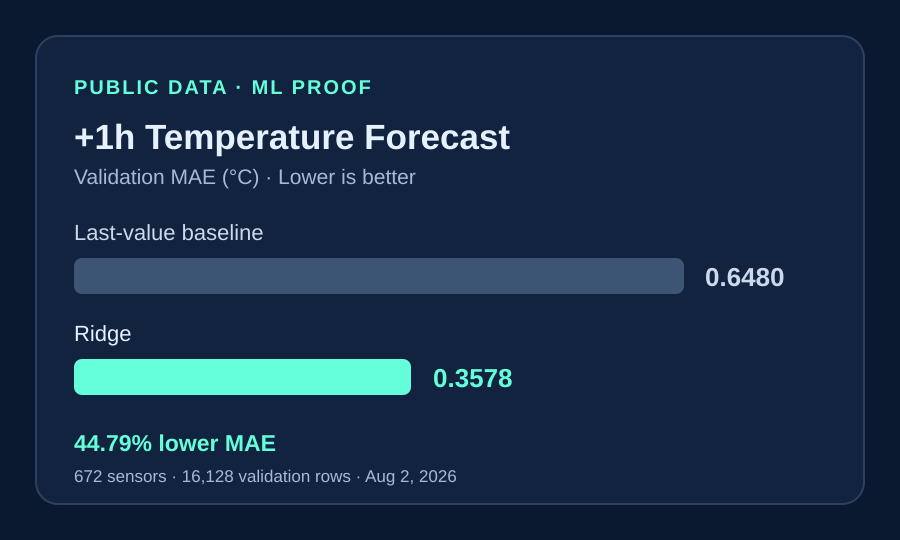
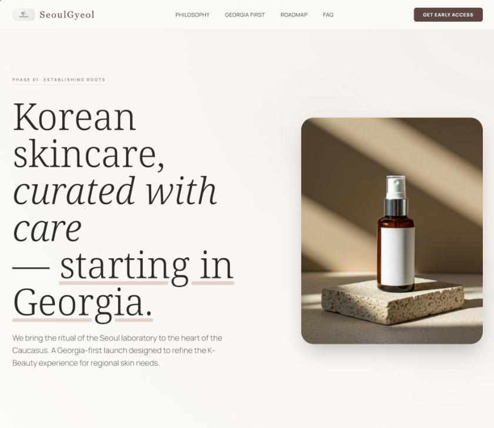
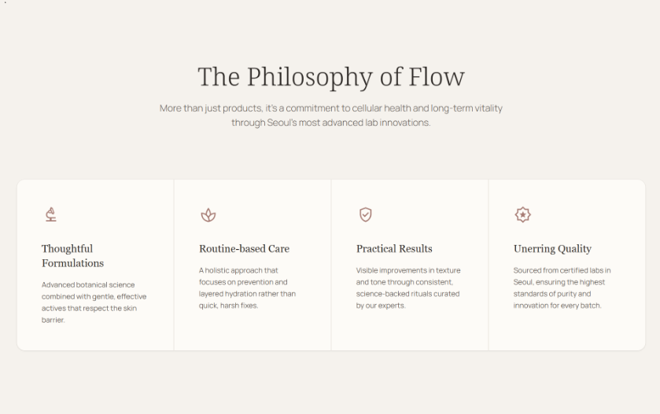
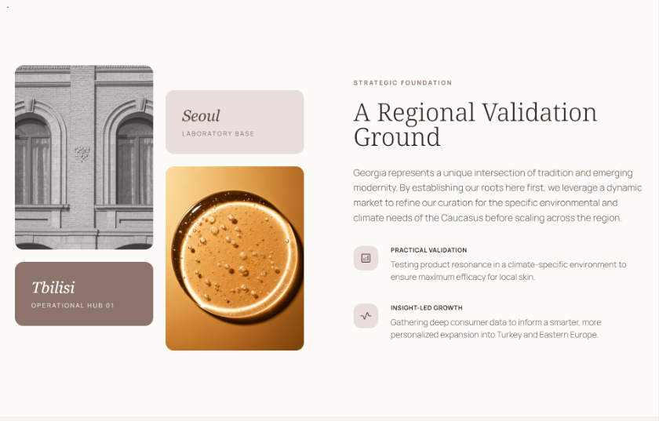
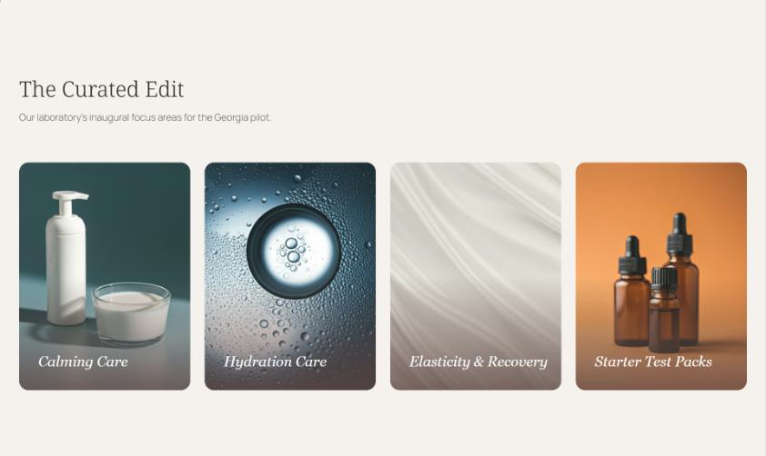
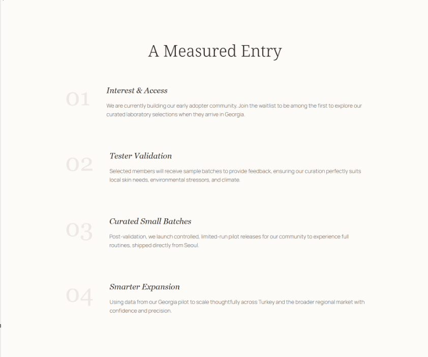
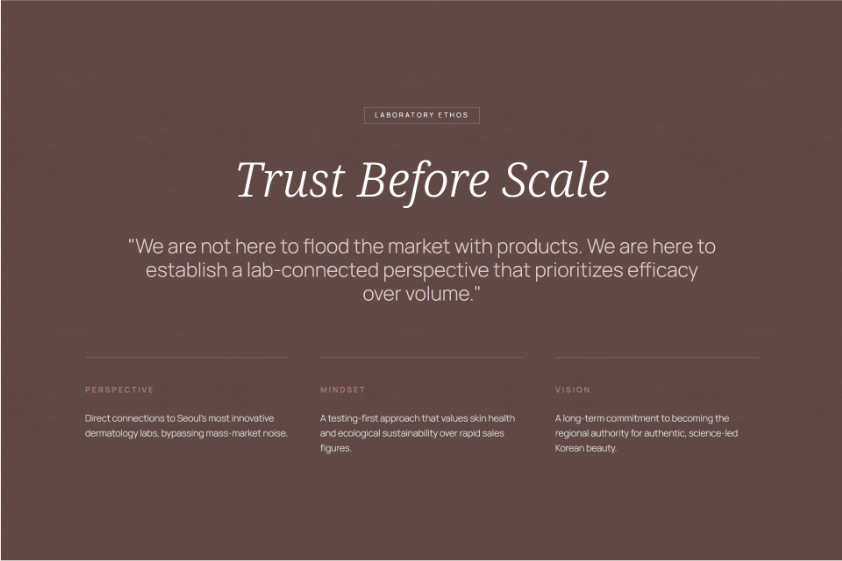
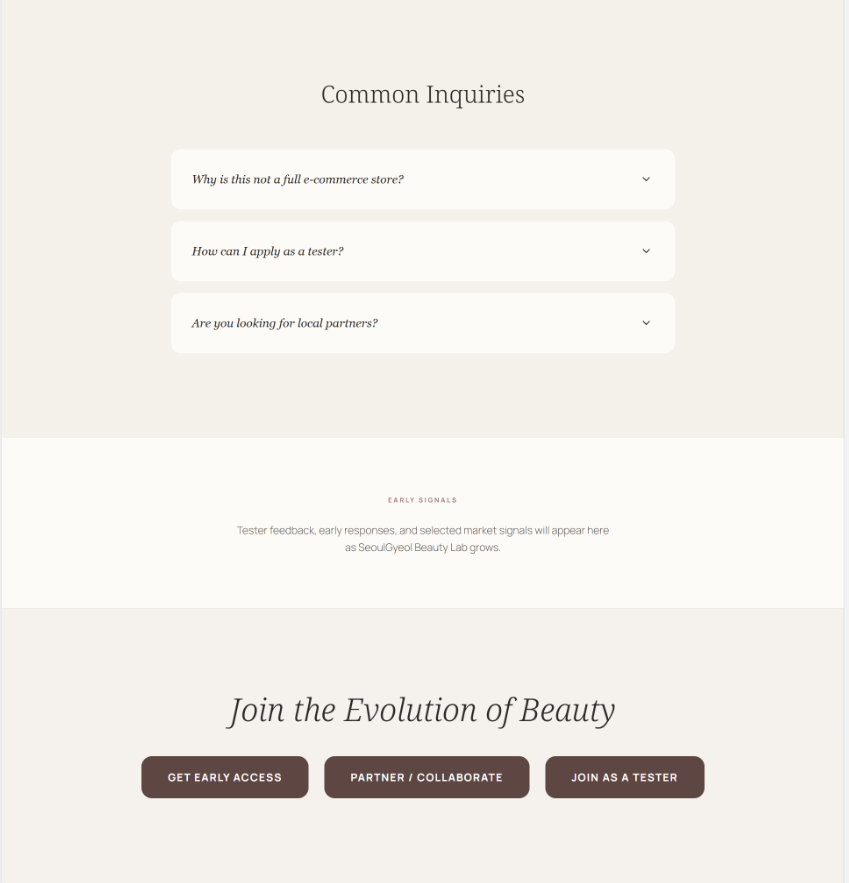
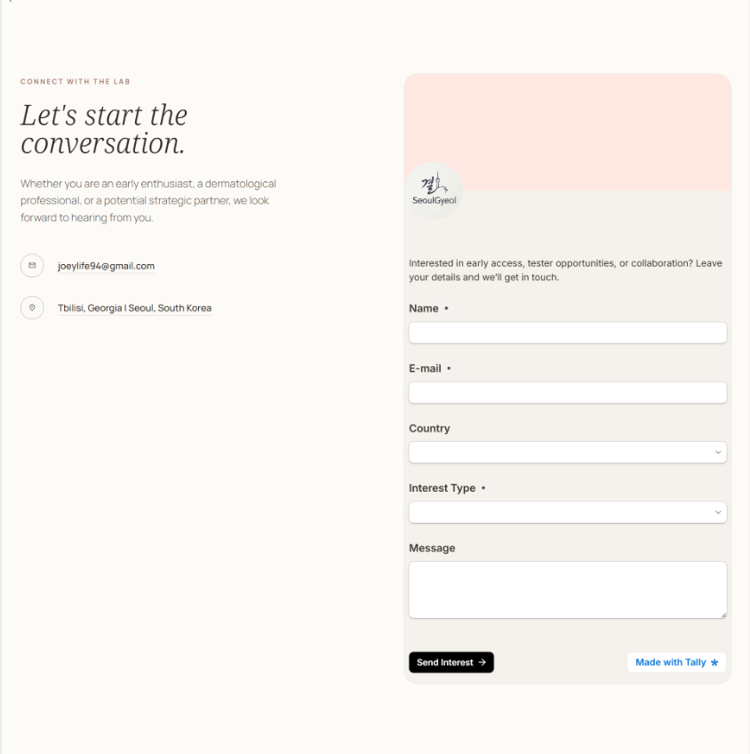

ENGINEERING × EXECUTION
BUILD.
INTEGRATE.
AUTOMATE.
기술을 위한 기술이 아니라, 실제로 사용하는 시스템을 만듭니다.
01 / DIGITAL BUSINESS CARD
DONGYOUN
JEON.
AI Product & Systems Builder
BUILD · INTEGRATE · AUTOMATE
Turning problems into working systems.
검증된 프로젝트 보기 ↗소개
Dongyoun Jeon · Backend & Systems Engineer
반복 업무를 먼저 구조화하고, 분류·요약·검색·의사결정 보조처럼 AI가 실제 이득을 주는 구간에만 연결합니다.
보기 좋은 AI 데모보다, 사람이 계속 운영할 수 있는 첫 시스템을 만드는 데 집중합니다.
지금도 복붙, 수동 확인, 재정리에 시간을 쓰고 있다면 이미 속도와 오류율에서 비용을 내고 있을 가능성이 큽니다.
보통 24–48시간 내 답변합니다 · 범위가 완전히 정리되지 않아도 문의 가능합니다
이런 팀과 가장 잘 맞습니다
작고 명확한 범위에서, 수작업을 실제 운영 가능한 시스템으로 바꾸려는 팀과 잘 맞습니다.
1–10인 SaaS 팀
운영 병목이 이미 보이는데, 전담 플랫폼 팀을 두기엔 아직 이른 팀
워크플로우 MVP를 검증해야 하는 파운더
스프레드시트나 메시지 기반 운영을 2–4주 안에 빠르게 시스템화해 보고 싶은 경우
승인·추적·정리 업무를 벗기려는 팀
반복 업무를 재실행 가능한 내부 도구나 백엔드 흐름으로 바꾸고 싶은 경우
브랜딩 중심 마케팅 사이트, 범위가 아직 열려 있는 대형 플랫폼, 장기 상주형 포지션은 현재 범위와 맞지 않습니다.
서비스
어떤 문제를 이런 형태로 해결합니다
작게 시작해 실제로 쓰일 수 있는 운영 시스템을 만듭니다. 먼저 업무 흐름과 범위를 잠그고, AI가 효과적인 구간이 있으면 그때 연결합니다.
Workflow Automation Sprint
파운더 · 오퍼레이터스프레드시트, Slack, 이메일로 이어 붙인 반복 업무를 더 이상 수작업으로 돌리기 어렵다.
제공 내용
- 현재 업무 흐름 정리
- 승인·추적·알림 + 필요한 경우 AI 분류·요약 구조화
- 재실행 가능한 MVP + 코드 인계
포함 안 됨
- 전사 시스템 전면 교체
- 범위 없는 대형 제품 기획
- 장기 무기한 운영 대행
Internal Tool Starter
소규모 팀 · 스타트업핵심 운영 업무를 제대로 된 내부 도구나 어드민 화면으로 바꾸고 싶다.
제공 내용
- 범위 정의 · 워크플로우 설계
- 어드민 로직 · 데이터 처리
- 검토 가능한 MVP + 코드 인계
포함 안 됨
- 조직 전체 시스템 교체
- 범위 미정 멀티팀 제품
- 오픈엔드 무기한 지원
Backend MVP Sprint
제품팀 · 창업자API, 백엔드 로직, AI·외부 서비스 연동, 운영 파이프라인을 빠르게 만들어야 한다.
제공 내용
- MVP 범위 백엔드 아키텍처
- API · 데이터 흐름 · AI/외부 서비스 통합 구현
- 인수인계 지향 납품 + 코드 인계
포함 안 됨
- 전사 엔터프라이즈 전환
- 프론트엔드 중심 UI 디자인
- 범위 없는 장기 유지보수
대표 엔지니어링 Proof
ClaimTrace — AI 분석의 근거를 원문까지 추적
한국어 특허 PDF 분석에서 문서·페이지·문자 범위까지 근거를 추적하고 사람이 확인할 수 있도록 설계한 통제된 단일 사용자 환경의 Proof입니다.
Problem
AI 분석 결과의 출처가 불분명하면 검토자가 원문을 다시 확인하기 어렵습니다.
Approach
모델은 서버가 발급한 evidence ID를 선택하고, 서버가 이를 저장된 원문 위치로 해석합니다. 판단은 별도의 Human Review 기록으로 남깁니다.
Verified
동결된 v1.0 브라우저 워크플로우와 재현 가능한 테스트를 검증했습니다. 후속 D3 파일럿에서는 공개 한국어 특허 PDF 2건을 제한된 범위에서 실행했습니다.
Boundary
원문 링크의 유효성은 검증하지만 AI 문장의 법률적·의미적 정확성까지 보장하지 않습니다. 법률 판정, OCR, 상용 운영 준비는 검증 범위 밖입니다.

근거 기반 답변 — 원문에 연결된 evidence 표시

Source Highlight — 문서·페이지·문자 범위로 돌아가기

Human Review — AI 출력과 별도의 검토 기록
화면은 동결된 v1.0 합성 데이터 기반 브라우저 Proof에서 생성됐으며, 실제 특허 분석의 일반 정확도를 의미하지 않습니다.
운영 자동화 사례
수작업 상품 조사를 반복 실행 가능한 운영 파이프라인으로
Baseline
국가 간 상품 기회 조사는 보통 스프레드시트, 수동 검색, 기준 재정리로 흩어져 있습니다. 기준이 조금만 바뀌어도 처음부터 다시 조사해야 하고, 결과도 사람마다 달라지기 쉽습니다.
What changed
가격 수집, 상품 매칭, 마진 계산, 리포트 출력을 하나의 반복 가능한 파이프라인으로 구조화했습니다. 입력 조건을 바꾸면 같은 흐름으로 다시 실행할 수 있고, 검토를 위한 대시보드와 결과 출력도 함께 정리했습니다.
Result
조사 과정을 "한 번 하고 끝나는 작업"이 아니라, 다시 돌릴 수 있는 운영 흐름으로 바꿨습니다. 수집 → 처리 → 검토 → 리포트까지의 단계가 분리되면서 기준 변경에도 다시 실행 가능한 구조를 확보했습니다.
Good fit
시장 조사, 승인 흐름, 정리 업무처럼 사람이 반복해서 처리하던 운영 과정을 작은 시스템으로 바꾸고 싶은 팀에 잘 맞는 패턴입니다.

Market Overview — 스캔 결과와 시장 비교 데이터

Product Opportunities — 마진 기준 상품 기회 리스트

Market Intelligence — 시장 분석 인사이트
이 사례가 증명하는 역량
추가 검증 사례


Papyr.us v1.0 Proof + D1 검증
작은 팀의 문서 관리에서 사용자 인증, 팀 접근 권한, 문서 변경·복원, 검색을 한 흐름으로 검증한 React·Express·PostgreSQL 기반 협업 위키 Proof입니다.
실행 검증: 8개 Golden Journey의 문서·권한·검색·복구 경계 및 D1에서 기존 사용자의 팀 참여 → 공동 사용 → 권한 철회 후 접근 거부까지 확인했습니다.
검색은 팀·페이지 권한을 적용한 PostgreSQL FTS이며 AI는 선택적 보조입니다. 공개 운영, 엔터프라이즈 SSO, 벡터 RAG, SLA는 현재 검증 범위 밖입니다.
이미지는 기존 UI 예시이며, 승인된 테스트·스크린샷의 출처는 아래 Proof Index에 있습니다.

Public Sensor ML MVP READY TO SHOW · 제한된 실측 검증
서울시 공개 S-DoT 환경 데이터를 수집·검증하고, 시계열 특징 생성 → 1시간 후 평균기온 예측 → 잔차 기반 이상 후보 탐지 → FastAPI 대시보드까지 연결한 독립 개인 R&D Proof입니다.
실측 Proof: 1주일 데이터에서 672개 센서·검증 16,128건을 대상으로, 마지막 24시간의 MAE가 Naive 0.6480°C에서 Ridge 0.3578°C로 감소했습니다(44.79%).
해당 기간의 제한된 평가 결과이며 장기간 일반화 성능을 뜻하지 않습니다. 이상 후보에 실제 센서 고장 정답 레이블은 없고, 운영·고객 데이터 적용은 검증하지 않았습니다.
위 이미지는 검증된 MAE 수치의 그래프이며, 실제 대시보드 스크린샷이 아닙니다. 자료 출처: 서울시 S-DoT(OA-22833).








SeoulGyeol Beauty Lab
문제: 상담 전 진단과 리포트 전달이 수작업이라 응답이 느렸습니다. 시스템: 동의 기반 설문→점수화→리포트→이메일 전달을 자동화했습니다.
운영 결과: 상담 준비 시간이 줄고, 고객별 리포트를 누락 없이 일관되게 전달할 수 있게 됐습니다.


Restricted Ops Intake MVP
문제: 민감한 운영 요청이 채팅에 흩어져 승인/추적이 어려웠습니다. 시스템: 승인된 Slack 요청만 접수해 구조화된 객체로 변환했습니다.
운영 결과: 요청 누락·중복을 줄이고, 감사 가능한 기록 기반으로 후속 처리 속도를 높였습니다.
강점
웹 제작보다 운영 시스템에 가까운 이유
약 5년간의 기업 시스템 개발·운영 경험을 바탕으로, 데모뿐 아니라 인수인계와 운영 경계까지 고려해 설계합니다.
API 응답속도 개선
WAS 분리·최적화 작업을 통해 해당 프로젝트의 내부 측정 기준 평균 응답시간 약 30% 개선에 기여했습니다.
동시 처리량 20배 개선
인증/세션 경로의 DB 커넥션 풀 병목을 해결해 동시 처리량을 100에서 2,000+ 수준으로 개선했습니다.
DB 전환 데이터 정합성 대응
Oracle → MySQL 전환 이후 서비스 간 데이터 정합성을 위한 보상 트랜잭션(Saga) 처리 로직 구현에 참여했습니다.
인증 · 보안 시스템
Java · Quarkus · Keycloak 기반 OAuth 2.0 SSO 시스템 설계 및 구현. 인증 경계를 실무 환경에서 다뤄왔습니다.
점진적 현대화
모놀리식 플랫폼을 Spring Boot 기반 모듈형 서비스로 단계적으로 분리. 전면 교체 없이 운영하면서 개선합니다.
AI를 기능이 아니라 워크플로우 일부로
LLM을 독립 데모처럼 붙이지 않습니다. 입력 검증, 분류·추출, 검색/RAG, 사람이 확인하는 의사결정 단계와 연결해 운영 흐름 안에서 사용합니다.
위 성과 수치는 각 프로젝트의 당시 조건에서 기록한 경력 사례로, 다른 환경에서의 동일한 성능 개선을 보장하지 않습니다.
이런 방식으로 진행합니다
일정
보통 2–6주 내의 작고 명확한 범위에서 가장 잘 맞습니다. 첫 단계는 전체를 크게 만들기보다, 실제 운영에 바로 도움이 되는 핵심 흐름 1개를 먼저 닫는 방식으로 진행합니다.
납품물
작동하는 MVP 또는 범위가 명확한 구현물을 제공합니다. 보통 핵심 백엔드 로직, 워크플로우 구조, 필요한 경우 내부 UI/어드민 화면, 그리고 인계용 설명을 함께 포함합니다.
소통 방식
이메일과 문서 중심으로 진행합니다. 중간 공유는 텍스트, 스크린샷, 짧은 데모 영상 위주로 드리고, 꼭 필요할 때만 짧은 미팅을 잡습니다.
범위 관리
처음부터 범위를 작게 잠그는 것을 우선합니다. 중간에 새 요청이 생기면 무한 확장하지 않고, 현재 단계와 다음 단계를 분리해 안정적으로 진행합니다.
자주 묻는 질문
범위가 아직 완전히 정리되지 않았는데 문의해도 되나요?
네. 오히려 초기에 가장 필요한 건 모든 기능 목록보다도, 지금 어떤 업무가 수작업이고 어디가 가장 막히는지 정리하는 것입니다. 현재 상태와 원하는 결과만 있어도 첫 범위를 함께 잡을 수 있습니다.
작은 프로젝트도 맡나요?
네. 오히려 2–6주 안에 닫을 수 있는 작고 명확한 범위의 프로젝트와 가장 잘 맞습니다. 처음부터 큰 시스템 전체를 한 번에 만들기보다, 실제로 바로 쓰일 핵심 흐름 1개를 먼저 구현하는 쪽을 선호합니다.
미팅은 얼마나 필요한가요?
기본은 이메일/문서 중심입니다. 진행 중 공유도 텍스트, 스크린샷, 짧은 데모 중심으로 드립니다. 짧은 미팅이 필요할 수는 있지만, 회의가 많은 방식은 지향하지 않습니다.
어떤 기술 스택으로 작업하나요?
기본 강점은 백엔드, 운영 시스템, 내부 도구, 워크플로우 구조화에 있습니다. 프로젝트 목적에 맞는 스택을 우선하며, AI도 효과가 있는 구간에만 선택적으로 적용합니다.
납품 후 지원도 가능한가요?
가능합니다. 다만 처음부터 무기한 운영 계약을 전제로 하기보다, 현재 단계 납품 범위와 이후 고도화 단계를 분리해서 보는 편이 더 명확합니다.
코드와 산출물의 소유권은 어떻게 되나요?
별도 합의가 없다면, 납품 범위에 포함된 코드와 산출물은 클라이언트가 인계받아 운영 가능한 형태로 전달하는 것을 기본으로 합니다. 세부 조건은 프로젝트 시작 전에 명확히 정리하는 것이 좋습니다.
민감한 운영 데이터도 다룰 수 있나요?
가능합니다. 다만 실제 운영 데이터, 권한, 접근 범위는 프로젝트 초기에 명확히 정리되어야 합니다. 필요 시 더미 데이터 기반 검증이나 최소 권한 접근 원칙으로 진행하는 방식을 우선합니다.
문의하기
이메일 문의로 바로 시작하세요
현재 운영 병목과 원하는 결과를 이메일로 보내주시면,
범위를 검토한 뒤 적합한 첫 단계를 회신드립니다.
문의 이메일
dongyoun.jeon@gmail.com아래 5가지만 보내주시면 범위 판단이 빠릅니다.
- 현재 수작업으로 처리 중인 업무 1–2개
- 누가, 얼마나 자주 그 업무를 처리하는지
- 지금 가장 큰 운영 병목 1개
- 이번 단계에서 원하는 운영 결과 1개
- 희망 일정 또는 마감 시점